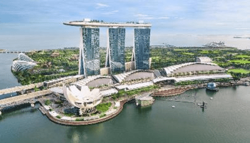

The Gardens by the Bay is a nature park spanning 101 hectares (250 acres) in the Central Region of Singapore, adjacent to the Marina Reservoir. The park consists of three waterfront gardens: Bay South Garden (in Marina South), Bay East Garden (in Marina East) and Bay Central Garden (in Downtown Core and Kallang). The largest of the gardens is the Bay South Garden at 54 hectares (130 acres) designed by Grant Associates. Its Flower Dome is the largest glass greenhouse in the world.
Marina Bay Sands
Marina Bay Sands is an integrated resort fronting Marina Bay in Singapore and a landmark of the city. At its opening in 2010, it was deemed the world's most expensive standalone casino property at S$8 billion (US$6.88 billion).The resort includes a 2,561-room hotel, a 120,000-square-metre (1,300,000 sq ft) convention-exhibition centre, the 74,000-square-metre (800,000 sq ft) The Shoppes at Marina Bay Sands mall, a museum, a large theatre, "celebrity chef" restaurants, two floating crystal pavilions, art-science exhibits, and the world's largest atrium casino with 500 tables and 1,600 slot machines. The complex includes three towers topped by the Sands Skypark, a skyway connecting 340-metre-long (1,120 ft) with a capacity of 3,902 people and a 150 m (490 ft) infinity swimming pool, set on top of the world's largest public cantilevered platform, which overhangs the north tower by 66.5 m (218 ft).The 20-hectare resort was designed by Moshe Safdie architects

Singapore Botanic Gardens
The Singapore Botanic Gardens is a 165-year-old tropical garden located at the fringe of the Orchard Road shopping district in Singapore. It is one of three gardens, and the only tropical garden, to be honoured as a UNESCO World Heritage Site. The Botanic Gardens has been ranked Asia's top park attraction since 2013, by TripAdvisor Travellers' Choice Awards It was declared the inaugural Garden of the Year by the International Garden Tourism Awards in 2012.